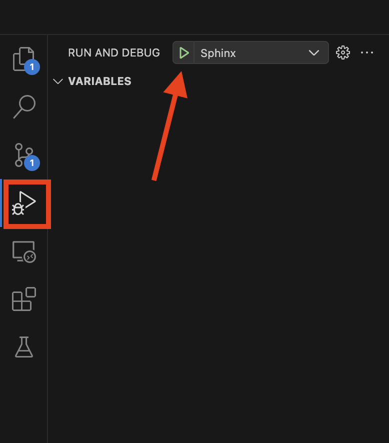
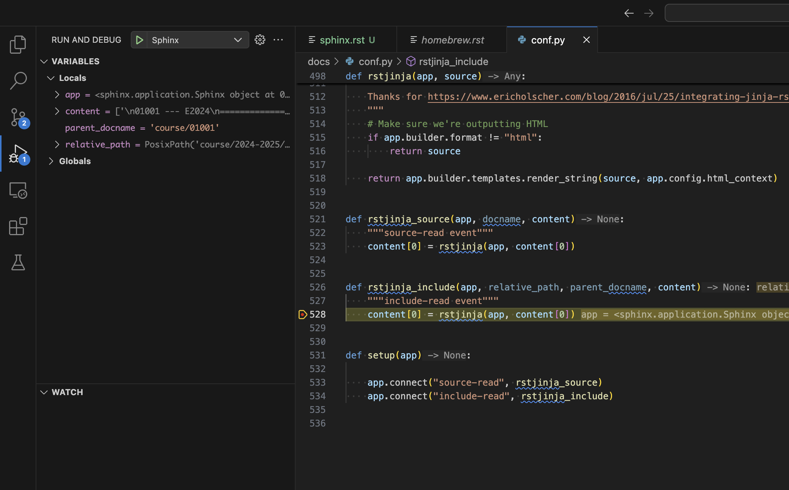

Sphinx Development Documentation#
This document outlines some of the internals of Sphinx and how to extend it. A good resource to get started with the internals of Sphinx include:
Sphinx uses .rst (reStructuredText) files in order to create documents. The .rst format was intentionally made highly extensible with users being able to define their own directives and roles.
An example of a custom directive is:
.. custom-directive:: option
:option-a: true
:option-b: false
input
An example of a custom role is:
Here is some text :custom-role:`input`.
In the following sections we investigate how to implement a Sphinx extension that implements both a directive and a role.
Custom directives#
Examples of directives can be found in the Sphinx documentation here. These directives are all from the Sphinx source code.
A hello world directive looks like:
from docutils import nodes
from docutils.parsers.rst import Directive
class HelloWorldDirective(Directive):
def run(self):
paragraph_node = nodes.paragraph(text="Hello, world!")
return [paragraph_node]
In conf.py add app.add_directive("hello", HelloWorldDirective) to the setup(app) function so it ends up looking like this:
def setup(app):
app.add_directive("hello", HelloWorldDirective)
app.connect("source-read", rstjinja_source)
app.connect("include-read", rstjinja_include)
This adds the .. hello directive to be used in all sphinx files. The code:
.. hello
becomes “Hello, world!” when rendered.
Current custom directives:
No custom directives
Custom roles#
Roles can be seen as an inline directive in paragraphs. Examples of roles can be found here.
A hello world role looks like:
from docutils import nodes
def hello_role(name, rawtext, text, lineno, inliner, options={}, content=[]):
node = nodes.strong(text="Hello, world!")
return [node], []
In conf.py add app.add_role('hello', hello_role) to the setup(app) function so it ends up looking like this:
def setup(app):
app.add_role('hello', hello_role)
app.connect("source-read", rstjinja_source)
app.connect("include-read", rstjinja_include)
Current custom roles:
mailtoallows a custom specification of a mail with a template.
Custom extensions#
Sphinx extensions can do a lot more than just providing custom codes for .rst documents. In this project we use two extensions to do the following:
Custom template generation for environments (generate_env_pages_from_json)
Custom titles for documents (add_title_to_context)
add_title_to_context:
This extension modifies the title of the document using the :title: page metadata. If :title: is not provided then the title of the page would be the text of the first section title.
:title: This is my custom page title
My old title
============
Content
-------
This is done by hooking into the Sphinx “html-page-context” event for every page and modify it according to the provided metadata.
generate_env_pages_from_json
This extension creates install guides for provided environments.yml files with specific metadata included. This extension hooks into the “builder-inited” event and generates .rst files from the template “_templates/environment_installation.rst”. The generated guides are placed in “docs/environments/course/{course_identifier}”.
This extension requires the html_context[“environments”] field in conf.py is populated with the information about the environment.yml files located in “docs/_static/environments/”.
These .yml files have the same structure as the environment files produced by conda export --no-builds
with the exception of removing the “prefix” field and adding the metadata as shown below.
metadata:
course_full_name: "Course name"
course_number: "xxxxx"
course_year: "2026"
course_semester: "Spring"
name: "0xxxx_S26" or "0xxxx_E26"
channels:
- conda-forge
dependencies:
- ipykernel
- numpy=2.2.0
- python=3.13.4
- pip
- pip:
- matplotlib
How to debug#
In order to debug these custom extensions to Sphinx a VS-code “launch.json” file has been provided. This will start a sphinx_autobuild session with the debugpy debugger attached. It is not necessary to restart the debugger when a change to the source code is made since the site is hot reloaded on save.
Launch by pressing F5 or go into the debug menu and clicking on start debugging:
{kind=link}

Breakpoints can now be set in the conf.py file.
{kind=link}
